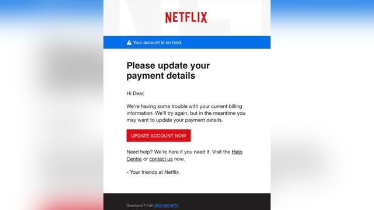
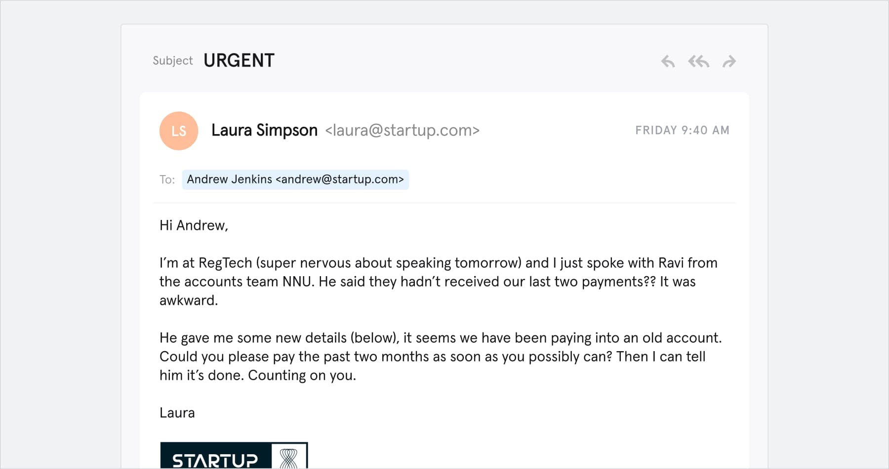

Email Phishing
The most common form of phishing. Phishers make fake accounts that imitate actual business to trick you out of your information.
For fake domains, attackers may add or replace characters (e.g. my-bank.com instead of mybank.com), use subdomains (e.g. mybank.host.com) or use the trusted organization's name as the email username (e.g. mybank@host.com).
Email phishing messages have one of the following goals:
- Make the user click a link to a malicious website, in order to install malware on their device.
- Make the user download an infected file and using it to deploy malware.
- Make the user click a link to a fake website and submit personal data.
- Make the user reply and provide personal data.
Spear Phishing
Spear phishing is a targeted attack on a specific victim. The attacker typically already has some or all of the following information about the victim:
- Name
- Place of employment
- Job title
- Email address
- Specific information about their job role
- Trusted colleagues, family members, or other contacts, and samples of their writing
This information helps increase the effectiveness of phishing emails and manipulate victims into performing tasks and activities, such as transferring money.
Whaling
Whaling attacks target senior management and other highly privileged roles. The ultimate goal of whaling is the same as other types of phishing attacks, but the technique is often very subtle. Senior employees commonly have a lot of information in the public domain, and attackers can use this information to craft highly effective attacks.
Typically, these attacks do not use tricks like malicious URLs and fake links. Instead, they leverage highly personalized messages using information they discover in their research about the victim. For example, whaling attackers commonly use bogus tax returns to discover sensitive data about the victim, and use it to craft their attack.

Smishing and Vishing
This is a phishing attack that uses a phone instead of written communication. Smishing involves sending fraudulent SMS messages, while vishing involves phone conversations.
In a typical voice phishing scam, an attacker pretends to be a scam investigator for a credit card company or bank, informing victims that their account has been breached. Criminals then ask the victim to provide payment card information, supposedly to verify their identity or transfer money to a secure account (which is really the attacker's).
Vishing scams may also involve automated phone calls pretending to be from a trusted entity, asking the victim to type personal details using their phone keypad.

Angler Phishing
These attacks use fake social media accounts belonging to well known organizations. The attacker uses an account handle that mimics a legitimate organization (e.g. “@pizzahutcustomercare”) and uses the same profile picture as the real company account. Attackers take advantage of consumers' tendency to make complaints and request assistance from brands using social media channels. However, instead of contacting the real brand, the consumer contacts the attacker's fake social account.
When attackers receive such a request, they might ask the customer to provide personal information so that they can identify the problem and respond appropriately. In other cases, the attacker provides a link to a fake customer support page, which is actually a malicious website.